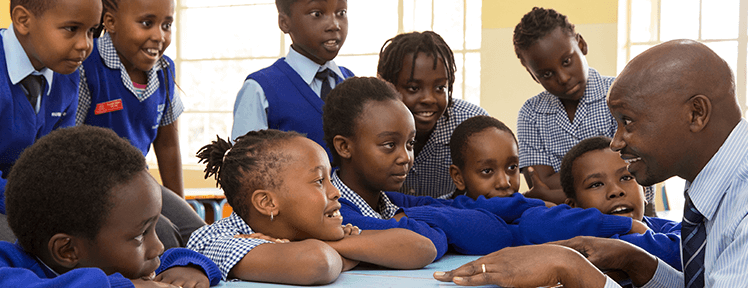
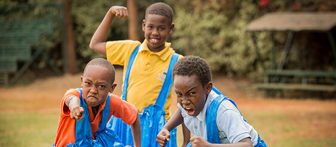
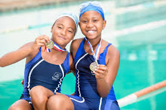

 Our curriculum is balanced, broad and relevant to our learners. Our schools are divided into the following sections:Our curricula are based upon the National Curriculum of England and Wales but include additional learning opportunities that we plan for all our pupils to enhance, extend and internationalise the curricula. We do this through performing arts, sports, outdoor learning, social responsibility, adapting the topics taught and an extensive Extra-Curricular program. Read more about each of the curricula we offer.
Early Years Foundation Stage
Age 2-5
Primary - Key Stages 1 and 2
Age 5-11
Lower Secondary - Key Stage 3
Age 11-14
Secondary - Key Stage 4 (IGCSE)
Age 14-16
Sixth Form - Key Stage 5 (A-Level, IB, BTEC)
Age 16-18
Early Years Foundation Stage
In our Early Years Classes, the Early Years Foundation Stage Curriculum is followed. All areas of learning and development are important and interconnected.
Three areas are particularly crucial for igniting children’s curiosity and enthusiasm for learning, and for building their capacity to learn, form relationships and thrive.

Student achievements
 We are very proud of our students record of academic achievement, and our teachers focus on helping each student achieve their maximum potential. We offer our students first class guidance on career opportunities and university placements, assisting them with the various choices faced in the educational and applications process.United Nations Global CompactUnited Nations Global Compact is strategic policy initiative for businesses that are committed to aligning their operations and strategies with ten universally accepted principles in the areas of human rights, labour, environment and anti-corruption, and take actions that advance societal goals. The UN Global Compact works toward the vision of a sustainable and inclusive global economy which delivers lasting benefits to people, communities, and markets.
For more info about us
rusingaschools@gmail.com rusingaschool@yahoo.com +254789043253 +254709764523 P.O. Box 25088-00603, Lavington, Nairobi. We are located opposite Braeburn school
 Rusinga Schools
Rusinga Schools